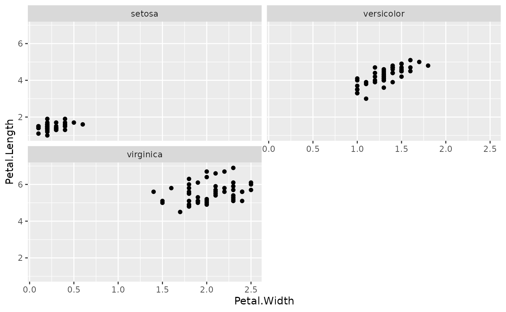
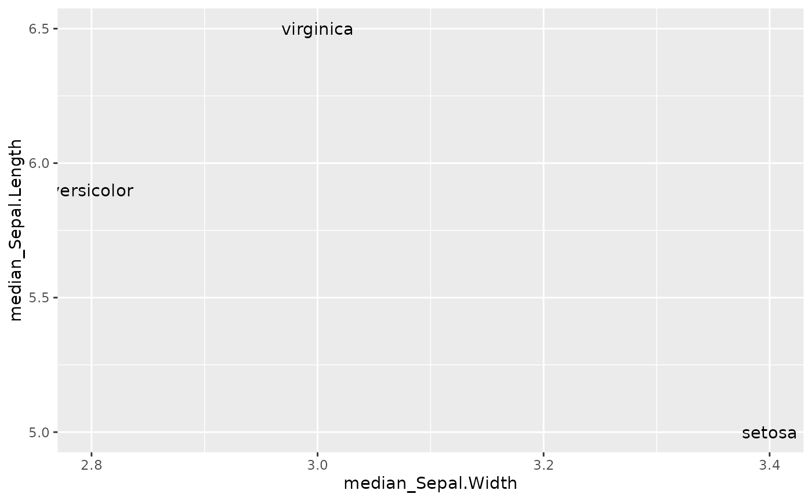
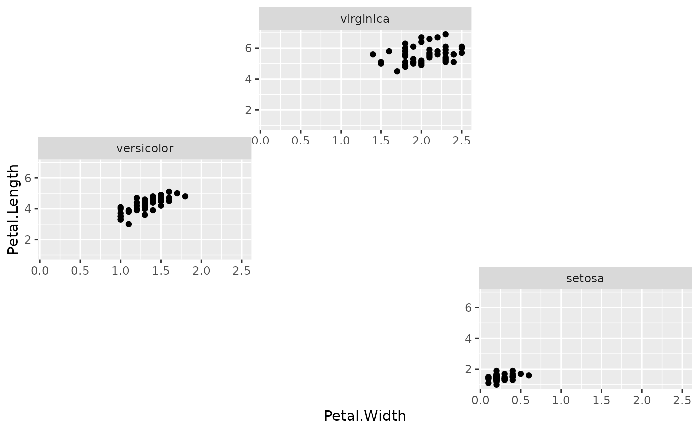
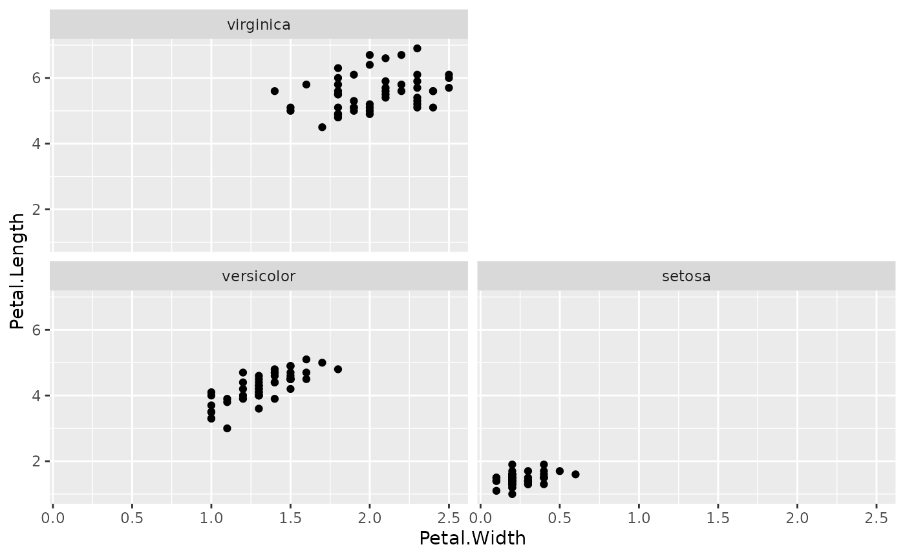
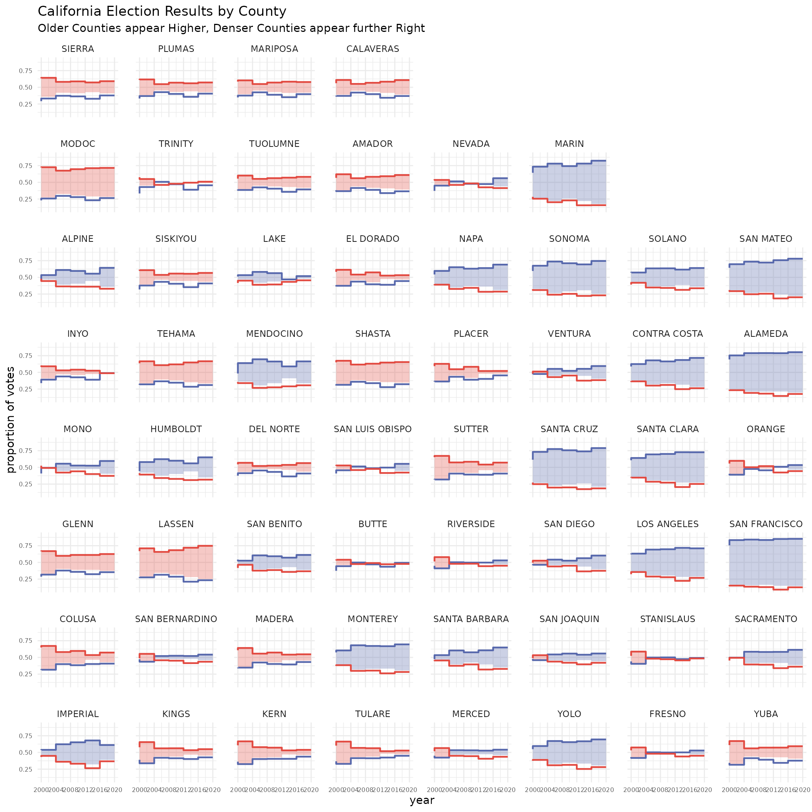
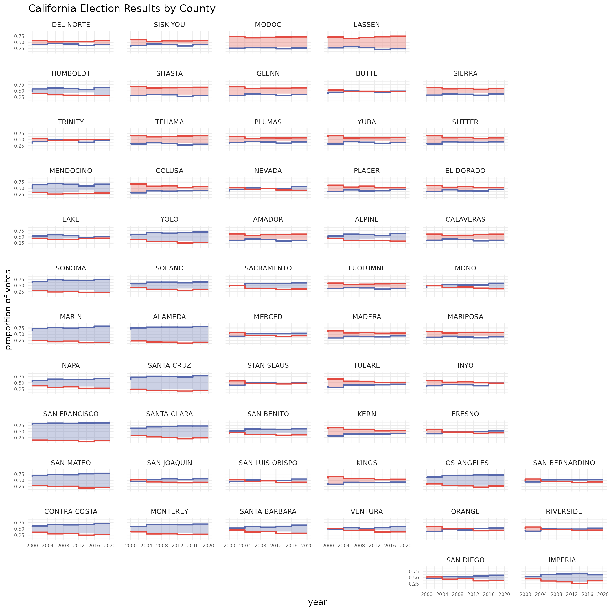
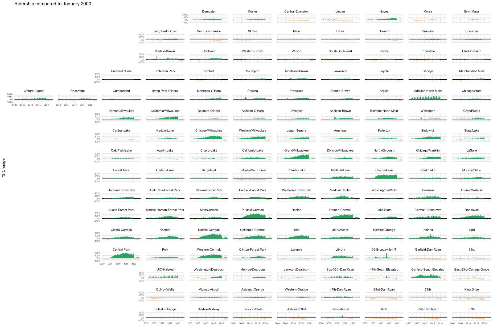

facetwarp
facetwarp.Rmdfacetwarp is an extension of the ggplot2 specifically aimed at arranging faceted plots.
The main function within the facetwarp package is
facet_warp, which is a close sibling of ggplot2::facet_wrap,
hence the similar name. If you’re not already familiar with how to use
ggplot2::facet_wrap,
please start there.
Before you go any further, you should already be familiar with This allows you to ‘speak’ a graph from composable elements, instead of being limited to a predefined set of charts.
Part 1: wrap vs warp 🪄
wrap
First let’s recall what facet_wrap gives us using the
iris dataset. 👇
library(ggplot2)
ggplot(iris) +
geom_point(aes(x=Petal.Width, y=Petal.Length))+
facet_wrap(vars(Species),nrow = 2)
Note that there are 3 facets, one for each species, and they are arranged in alphabetical order. Because we’ve arranged them into 2 rows, and there are only 3 facets, the 4th panel (lower, right) is not occupied.
warp
Now, we know that we’ve got other columns in this dataset,
specifically Sepal.Width and Sepal.Length.
Let’s explore those axis quickly by summarizing their values by
Species
library(dplyr, warn.conflicts = FALSE)
ggplot(iris %>%
group_by(Species) %>%
summarize(median_Sepal.Width = median(Sepal.Width),
median_Sepal.Length = median(Sepal.Length)))+
geom_text(aes(x=median_Sepal.Width, y=median_Sepal.Length, label=Species))
In our facetted scatter plot above, instead of arranging the facets
alphabetically, maybe we want the layout to mimic this
Sepal.Length and Sepal.Width arrangement we
see above.
IT IS TIME TO ✨ WARP THE FACETS 🪄
library(facetwarp)
ggplot(iris)+
geom_point(aes(x=Petal.Width, y=Petal.Length))+
facet_warp(vars(Species), macro_x='Sepal.Width', macro_y='Sepal.Length', nrow = 3, ncol = 3)
👆 Notice the layout has changed. facet_warp has
repositioned the facets! In fact, they are mimicing the arrangement we
saw above: * virginica at the top due to its high
median_Sepal.Length * versicolor at the left
due to its low median_Sepal.Width * setosa at
the lower-right due to its low median_Sepal.Length and high
median_Sepal.Width
This was accomplished using our macro axes. When we
say macro_x='Sepal.Width', we’re saying, make no change to
the “x axis” of the individual facets, but in order to arrange the
facets themselves, treat Sepal.Width as the
x-dimension.
Since we only need 4 panels total, we can try dropping
nrow and ncol to 2 to condense
the arrangement:
ggplot(iris)+
geom_point(aes(x=Petal.Width, y=Petal.Length))+
facet_warp(vars(Species), macro_x='Sepal.Width', macro_y='Sepal.Length', nrow = 2, ncol = 2)
Part 2: Building on the Warp Idea with Election Data
Let’s get familiar with a bit of US Presidential Election Data.
elections <- read.csv(file='https://gist.githubusercontent.com/mattdzugan/bf5bc48fad1850af59ac83a411f8c0d6/raw/8da67b51df907508f7c859fe29fc4637397513d8/County_Election_Data.csv')
elections <- elections %>% mutate(log_pop_density = log10(pop_density))
head(elections)
#> county_fips state state_po year county_name candidate party
#> 1 1001 ALABAMA AL 2000 AUTAUGA AL GORE DEMOCRAT
#> 2 1001 ALABAMA AL 2000 AUTAUGA GEORGE W. BUSH REPUBLICAN
#> 3 1001 ALABAMA AL 2004 AUTAUGA JOHN KERRY DEMOCRAT
#> 4 1001 ALABAMA AL 2004 AUTAUGA GEORGE W. BUSH REPUBLICAN
#> 5 1001 ALABAMA AL 2008 AUTAUGA BARACK OBAMA DEMOCRAT
#> 6 1001 ALABAMA AL 2008 AUTAUGA JOHN MCCAIN REPUBLICAN
#> candidate_votes total_votes pop_density med_age lon lat
#> 1 4942 17208 35.85342 39.2 -86.6429 32.53514
#> 2 11993 17208 35.85342 39.2 -86.6429 32.53514
#> 3 4758 20081 35.85342 39.2 -86.6429 32.53514
#> 4 15196 20081 35.85342 39.2 -86.6429 32.53514
#> 5 6093 23641 35.85342 39.2 -86.6429 32.53514
#> 6 17403 23641 35.85342 39.2 -86.6429 32.53514
#> unemployment_rate med_hh_income percent_bachelors log_pop_density
#> 1 2.9 66444 28.13147 1.554531
#> 2 2.9 66444 28.13147 1.554531
#> 3 2.9 66444 28.13147 1.554531
#> 4 2.9 66444 28.13147 1.554531
#> 5 2.9 66444 28.13147 1.554531
#> 6 2.9 66444 28.13147 1.554531In the US, the two primary parties are the DEMOCRAT and
REPUBLICAN parties, we can analyze the margin that these
parties have over one another in each county. But rather than just
viewing the counties alphabetically, let’s arrange the counties by
variables that matter.
The More Facets, The Bigger the Insights
We can try to warp the facets by characteristics that
may impact voter tendancies. Specifically this time:
facet_warp(vars(county_name),
macro_x = 'log_pop_density',
macro_y = 'med_age')let’s see it in context
ggplot(elections %>% filter(state_po == 'CA'))+
labs(title='California Election Results by County',
subtitle = 'Older Counties appear Higher, Denser Counties appear further Right',
y='proportion of votes')+
theme_minimal()+
theme(legend.position = 'None',
panel.spacing = unit(1.2, "lines"),
axis.text = element_text(size = 6))+
geom_rect(aes(xmin=year-4, xmax=year, ymin=(1-candidate_votes/total_votes), ymax=candidate_votes/total_votes, fill=party, alpha=candidate_votes/total_votes>.5))+
geom_step(aes(x=year, y=candidate_votes/total_votes, color=party), direction='vh', linewidth=0.8)+
scale_alpha_manual(values=c(0,0.3))+
scale_color_manual(values=c('#5768ac','#e24a41'))+
scale_fill_manual(values=c('#5768ac','#e24a41'))+
scale_x_continuous(limits=c(2000,2020), breaks = seq(2000,2020,4))+
facet_warp(vars(county_name),
macro_x = 'log_pop_density',
macro_y = 'med_age')
#> Warning: Removed 116 rows containing missing values (`geom_rect()`).
Leaving Empty Space to Reveal Geometries
We can also take advantage of this mechanism to sort the facets
geographically. In fact, if we play with the nrow and
ncol a bit, we can even get something that starts to
resemble the State of California
ggplot(elections %>% filter(state_po == 'CA'))+
labs(title='California Election Results by County',
y='proportion of votes')+
theme_minimal()+
theme(legend.position = 'None',
panel.spacing = unit(1.2, "lines"),
axis.text = element_text(size = 6))+
geom_rect(aes(xmin=year-4, xmax=year, ymin=(1-candidate_votes/total_votes), ymax=candidate_votes/total_votes, fill=party, alpha=candidate_votes/total_votes>.5))+
geom_step(aes(x=year, y=candidate_votes/total_votes, color=party), direction='vh', linewidth=0.8)+
scale_alpha_manual(values=c(0,0.3))+
scale_color_manual(values=c('#5768ac','#e24a41'))+
scale_fill_manual(values=c('#5768ac','#e24a41'))+
scale_x_continuous(limits=c(2000,2020), breaks = seq(2000,2020,4))+
facet_warp(vars(county_name),
macro_x = 'lon',
macro_y = 'lat',
nrow = 12, ncol = 6)
#> Warning: Removed 116 rows containing missing values (`geom_rect()`).
Note the “blue” counties along that Western Pacific Coast of California!
This happens because our underlying algorithm is attempting to fit
the 58 counties in 12*6=72 possible grid spaces.
This leaves 14 unused spaces which means we’ll begin to see the
underlying shape of the macro_x and macro_y
data.
Part 3: Chicago Transity Authority Data
Another fun example is sorting train station data geographically.
ridership <- read.csv('https://gist.githubusercontent.com/mattdzugan/603d4ba67f29457e2f5ddcad27178e8c/raw/efc26e77b39685eece11b051fbabbc74adad2ba0/CTA_Ridership.csv')
ggplot(ridership[complete.cases(ridership), ])+
theme_minimal()+
theme(legend.position = 'None',
panel.spacing = unit(1.2, "lines"))+
labs(title="Ridership compared to January 2000", ylab='% Change', xlab='')+
geom_hline(aes(yintercept=0))+
geom_area(aes(x=month, y=ifelse(avg_weekday_rides>avg_weekday_rides_initial, avg_weekday_rides/avg_weekday_rides_initial-1,0)), fill="#27b376")+
geom_area(aes(x=month, y=ifelse(avg_weekday_rides<avg_weekday_rides_initial, avg_weekday_rides/avg_weekday_rides_initial-1,0)), fill="#f9a73e")+
scale_y_continuous(limits=c(-1, 2))+
facet_warp(vars(stationame), macro_x = 'lon', macro_y = 'lat', nrow=16, ncol=13)
Here we can clearly see the spatial patterns in ridership gains in a way that simple alphabetical sorting wouldn’t allow.